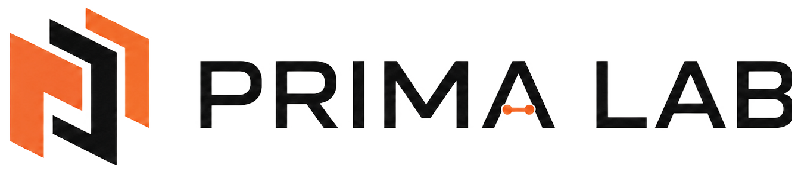
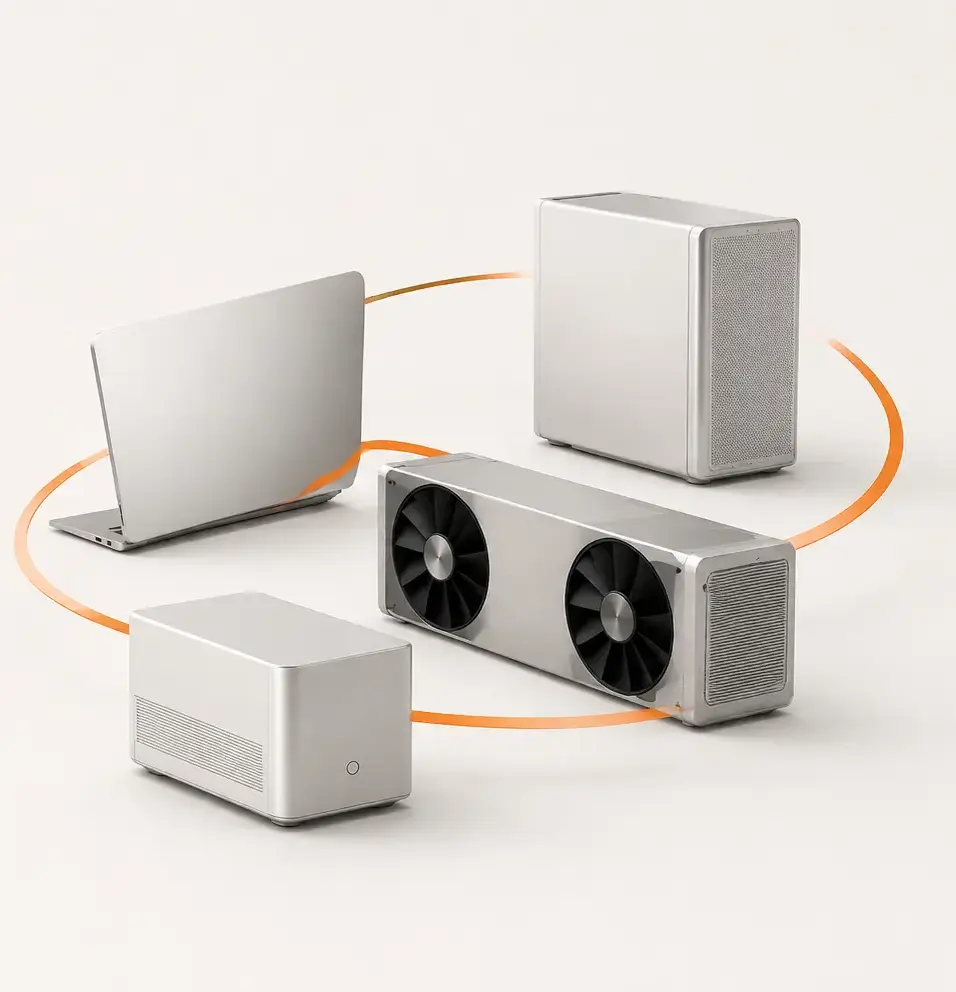
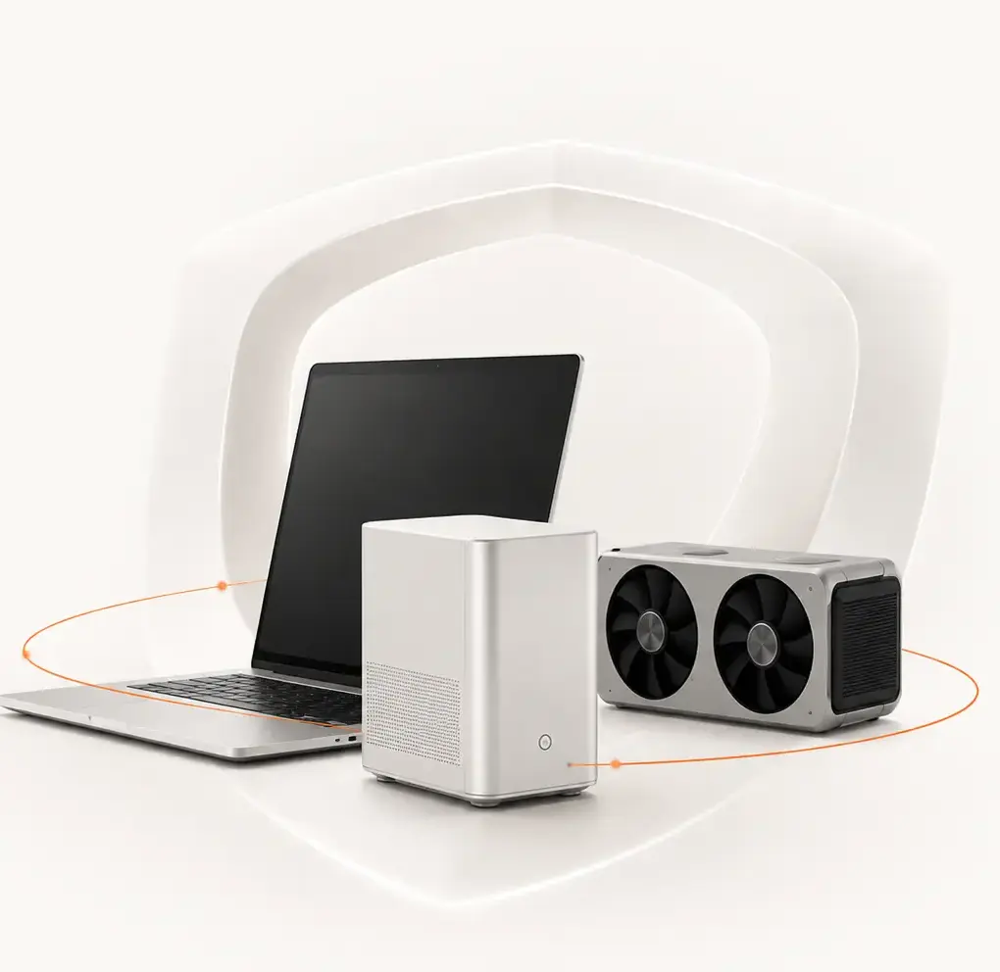
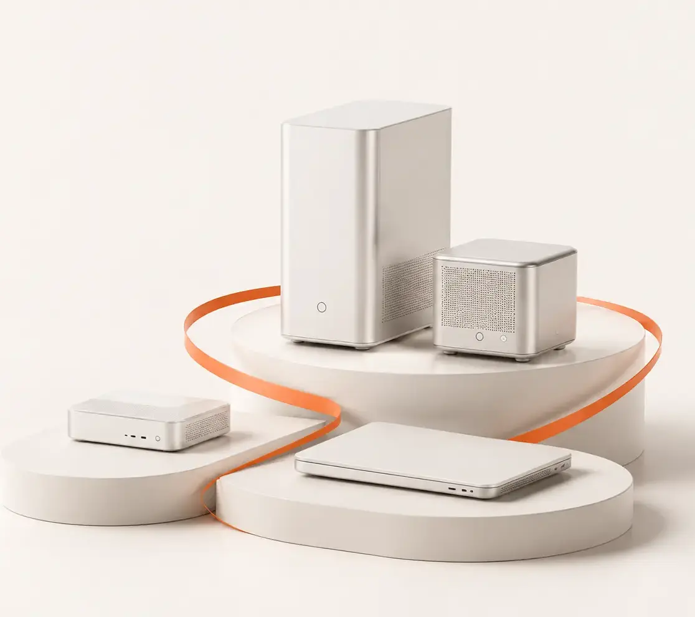
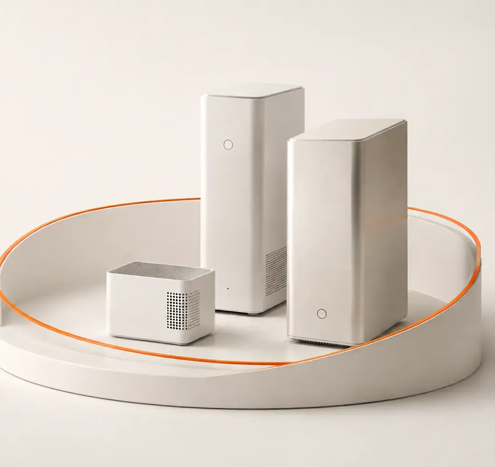
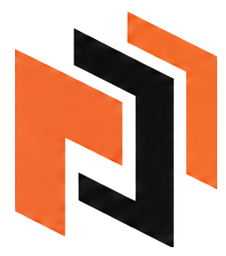

Use what is paid for
Turn sunk-cost consumer hardware into practical inference capacity.

GitHubOpen-source distributed inference
Prima.cpp turns compatible consumer hardware you already own into one private inference pool.

Use what is already paid for
Put compatible Linux PCs, laptops and workstations back to work—without sending private prompts to a remote service.

Heterogeneous by default
Let compatible CPU and CUDA systems contribute different amounts of memory and compute to the same inference pool.

Intelligence stays close
Serve local apps and agents from a reachable pool across the site—close to the data and under your control.

Watch Prima.cpp work
Simple at the endpoint. Flexible underneath.
Membership changes are admitted at safe request boundaries. Eligible recovery can re-plan supported active requests.
Cross-LAN collaboration uses operator-provided network reachability.
More model. Less new infrastructure.
Turn sunk-cost consumer hardware into practical inference capacity.
Run an OpenAI-compatible endpoint on infrastructure you control.
Use resource-aware placement across mixed CPU and CUDA memory.
Mainline development run: Qwen3.8-27B on an RTX A4000 workstation + RTX 4090 laptop reached a 6.47 tok/s median follow-up. Kimi K3 and HY4 are also under development evaluation.
Results are specific to the cited hardware, model, quantization and workload; they are not universal performance claims.

Prima Lab
Start with Prima.cpp—the open-source runtime for mixed, local hardware.